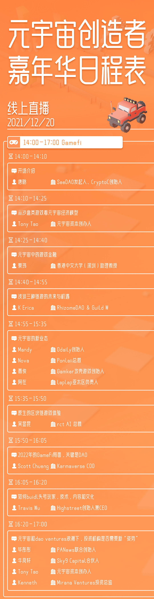

穿越元宇宙元年，创造者嘉年华来了！
作者: PANews
2021年初，我们预见元宇宙，讨论什么是元宇宙，可以怎样参与元宇宙？2021年末，我们穿越元宇宙元年，分享来自创作者和先锋们的初步成果，并探索未来的发展脉络。
产业创新是从一条S形曲线向另一条S形曲线转移的过程，随着移动互联网为代表的Web2.0进入存量博弈的时代，是时候范式转移至下一条第二曲线中了。元宇宙并非乌托邦，而是提升现实社会并赋能实体经济的下一代互联网，2021年也正式开启了Web3.0的黄金10年。 元宇宙帮助创造者圆梦，在沙盒游戏中，创造者打破物理空间的束缚，创造着在物理世界难以实现的建筑，基于自己的想法以极高的自由度打造自己的梦想世界，并充分掌握数字世界的自主权。元宇宙不仅是数字世界，而是让现实世界与物理世界实现强交互和深融合。但无论是虚拟还是现实，核心都是提升用户的体验。在元宇宙时代，整个社会的协作关系有望发生根本性的变化，全球协作的广度和深度会迅速扩展，以DAO为基础的全球性协作体系将进一步建立并释放出巨大的价值。 500年前的地理大发现催生了公司制和银行这样新的组织方式和金融方式，如今，我们对元宇宙的坚定探索，也极大的促进着DAO和加密资产这一的组织方式和金融方式的演化。我们即将步入元宇宙大创造的时代，底层技术和上层内容亟待被激活，引领人类走向更高层次的数字文明。12月20日-21日，由元宇宙资本（y2z Ventures）、CryptoC、GameCreator、Mono发起，SeeDAO、PANews、Mask Network、Flow、纯白矩阵联合主办的元宇宙创造者嘉年华活动即将开幕。将通过这次持续2天的线上活动，为大家展示元宇宙与Web3.0的全景。元宇宙资本创始人Tony Tao将从沙盒游戏剖析元宇宙经济模型；rct AI总裁吴显昆将带大家体验原生的区块链游戏；Highstreet创始人兼CEO Travis Wu将从技术、内容和文化讲述如何buidl头号玩家；来自Sky9 Capital等头部风投机构的合伙人将共同探讨DAO对投资的变革....元宇宙需要怎样的基础设施？2022年GameFi会有怎样局面？数据与隐私在Web3.0面临怎样的挑战？Flow如何构建元宇宙的基建？...这些问题都将在本次本次论坛中深入探讨，共有40多位元宇宙先行者将分享他们心中的实践心得。MatrixWorld、DoraFactory、风潮和橙皮书等八大机构将在两天晚上分别发起8场不同议题的Twitter Space自由讨论。来自海内外的专家将探讨创作者经济、DAO、GameFi等议题，并探讨如何与用户进行创新互动。欢迎你登陆元宇宙乐园官网(https://mcc.fund/)畅游，不仅可领取POAP NFT，且可在SeeDAO社区用于换取勋章和NFT，还能与创造者一同分享科技新时代的盛宴，感受未来已来，并在逐渐流行。时间：12/20-12/21
形式：线上直播+Twitter space互动
直播链接：https://www.twitch.tv/mc_carnival
官网（实时直播+议程信息）：https://mcc.fund/
8场TwitterSpace互动分享 ：
12/20 20:00-22:00 DAO
20:00 2022元宇宙展望 @Y2Z_Ventures发起
https://twitter.com/i/spaces/1dRKZlvBdZMJB
20:30 好的DAO的底层协议和工具有哪些？@DoraFactory发起
https://twitter.com/i/spaces/1ypKdEyWQNoGW
21:00 盘点热门 DAO 的探索与实践 @realmaskchina 发起
https://twitter.com/i/spaces/1nAKEYjvrdOKL
21:30 DAO 创作者经济新范式 @see_dao发起
https://twitter.com/i/spaces/1YqJDqmNwWQxV
12/21 20:00-23:00 元宇宙内容
20:00 元宇宙艺术与哲学 @CryptoC_Labs发起
https://twitter.com/i/spaces/1jMJgeWBzDYKL
21:00 关于下一个四年的预言 @chengpishu发起
https://twitter.com/i/spaces/1BRJjnaOZaeJw
21:30 元宇宙商业生态创新与用户互动 @PANewsLab发起
https://twitter.com/i/spaces/1YpKkZPlnPdxj
22:30 Metaverse新旅程 @ChainIde发起
https://twitter.com/i/spaces/1eaJbNZDLgvJX
